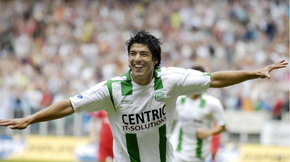
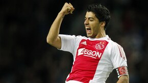

CARRERA
CLUB NACIONAL DE FUTBOL (2005-2006)
Prtidos: 34 Goles: 12 Asistencias: 4
F.C. GRONINGEN (2006-2007)
Partidos: 37 Goles: 15 Asistencias: 5

AFC AJAX (2007-2010)
Prtidos: 159 Goles: 111 Asistencias: 66
